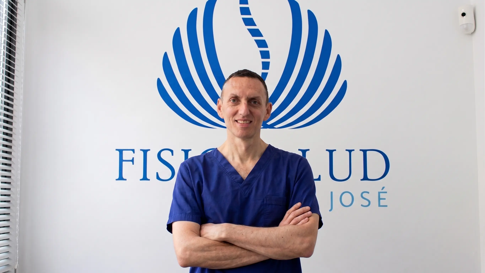

Usamos cookies propias para recordar tu elección en este banner.
No empleamos cookies publicitarias ni de terceros más allá del mapa de Google.
Puedes consultar nuestra Política de Cookies.
Somos un centro de fisioterapia con más de 20 años de experiencia profesional. A través de la
fisioterapia y de las distintas formaciones realizadas a lo largo de nuestra trayectoria, ayudamos a
nuestros pacientes a cuidar, mantener y restablecer su estado de salud.
Partimos de una visión global del cuerpo: lo entendemos como
un todo interrelacionado, profundizando en las posibles causas
del problema y no solo en el foco de la dolencia.
El reciclaje y el aprendizaje continuo de nuevas técnicas de tratamiento —todas con evidencia científica y homologadas— es una máxima en nuestro
desarrollo profesional y una seña de identidad del centro.
Formación continua para ofrecerte las técnicas más eficaces, siempre con base científica y adaptadas a tu
caso.
Osteopatía
Acercamiento diagnóstico y terapéutico manual a las disfunciones
de movilidad articular y de los tejidos, buscando la pérdida de movilidad en cualquier estructura del
cuerpo para prevenirla y restaurarla.
Acercamiento diagnóstico y terapéutico manual a las disfunciones de
movilidad articular y de los tejidos en general, por su implicación en la aparición de enfermedades.
Busca la pérdida de movilidad en cualquier estructura del cuerpo (óseo, visceral, craneal…) y la
restablece mediante técnicas manuales para prevenir y recuperar lesiones.
Método Poyet
Terapia manual basada en la osteopatía que considera la globalidad
del cuerpo: todo está entrelazado y no puede tratarse por partes aisladas. Busca la causa primaria y
restablece el equilibrio del organismo.
Terapia manual basada en la osteopatía que considera la globalidad
del cuerpo: todo está entrelazado y no puede tratarse por partes aisladas. A lo largo de la vida el
cuerpo genera compensaciones (musculares, articulares, fasciales, viscerales…) buscando armonía; cuando
esa armonía se pierde, aparece la patología. El Método Poyet busca la causa primaria y restablece el
equilibrio para devolver al organismo la armonía perdida.
Inducción miofascial
Método de evaluación y tratamiento del sistema fascial mediante
presiones sostenidas y estiramientos muy suaves. Apto para todas las edades, desde bebés hasta personas
de la tercera edad.
Método de evaluación y tratamiento tridimensional del sistema
fascial mediante presiones sostenidas, posicionamientos específicos y estiramientos muy suaves, para
eliminar restricciones y equilibrar la función corporal. La fascia envuelve órganos, músculos y fibras
de forma continua, de ahí la importancia de tratarla. Son técnicas muy suaves, aptas para pacientes de
todas las edades, desde bebés hasta personas de la tercera edad.
Método Pialoux (acupuntura)
Toma de la Medicina Tradicional China la acupuntura para localizar
desequilibrios energéticos y restablecer la circulación normal de la energía. Su finalidad principal es
la prevención y el mantenimiento del equilibrio.
Toma de la Medicina Tradicional China la acupuntura. Mediante
agujas y el diagnóstico sobre la arteria radial se localizan los desequilibrios energéticos del cuerpo
para restablecer la circulación normal de la energía, de modo que todas las estructuras del organismo
funcionen correctamente. Su finalidad principal es la prevención: ayudar a mantener el equilibrio y una
buena higiene de vida (idealmente con una visita por estación, o más frecuente ante un problema agudo).
Fisioterapia en músicos
El músico enfrenta alto riesgo de lesión por movimientos
repetitivos y posturas forzadas. Valoramos las alteraciones posturales y aplicamos fisioterapia
específica, mejorando también la calidad y creatividad musical.
El trabajo del músico conlleva alto riesgo de lesión por
movimientos repetitivos y posturas forzadas. Mediante la valoración de las alteraciones posturales, el
tratamiento de fisioterapia adaptado a cada lesión y la reeducación postural (con y sin instrumento),
mejoran la recuperación, la prevención de lesiones y la propia calidad y creatividad del músico.
Recomendaciones nutricionales
La alimentación influye directamente en la salud del aparato
locomotor. Con orientación nutricional se pueden tratar y mejorar tendinitis, cefaleas, dolor, fatiga y
otros síntomas relacionados.
Del "somos lo que comemos" se entiende la importancia de la
alimentación para la salud. Con consejos nutricionales se pueden tratar y mejorar muchas patologías:
tendinitis, cefaleas, dolor, fatiga y otros síntomas relacionados. El nutriente no es solo energía:
puede favorecer la regeneración celular o, al contrario, la degeneración.
Terapia craneal en bebés y niños
Terapia craneal suave, especialmente indicada para los más pequeños. Un cuidado
delicado y experto desde los primeros meses de vida.
Fisioterapia deportiva
Tratamiento y prevención de lesiones en deportistas de todos los niveles, con
protocolos adaptados a las demandas específicas de cada actividad deportiva.
Reeducación en el medio acuático
Programa de reeducación del movimiento en agua para la prevención y la
recuperación de lesiones, aprovechando las propiedades terapéuticas del medio acuático.
¿Te identificas con alguno de estos problemas?
Te ayudamos con…
Si llevas tiempo conviviendo con cualquiera de estas molestias, tenemos la formación y la experiencia para
ayudarte a superarlas.
Cervicalgias
Lumbalgias
Contracturas musculares
Problemas musculares
Tendinitis
Cefaleas y migrañas
Lesiones deportivas
¿Tienes alguna otra molestia?
Consúltanos sin compromiso.
Dos fisioterapeutas colegiados con más de 21 años de experiencia, en formación permanente para ofrecerte
siempre lo mejor.
Colegiada nº 61
Fisioterapeuta
Sonia
Más de 21 años de experiencia
Inducción miofascialOsteopatíaNutrición y lesionesTerapia craneal bebésFisioterapia en músicosFisioterapia deportiva

Colegiado nº 60
Fisioterapeuta
José Manuel
Más de 21 años de experiencia
Método PoyetMétodo PialouxTerapia craneal bebésFisioterapia en músicosFisioterapia deportivaReeducación acuática
Cómo trabajamos
Tu primera visita, paso a paso
Sabemos que llegar a una consulta nueva puede generar dudas. Aquí te contamos exactamente qué esperar
desde el primer momento.
Valoración
Te escuchamos y evaluamos tu caso teniendo en cuenta tu cuerpo en conjunto,
sin prisa y con atención plena.
Diagnóstico global
Buscamos el origen del problema, no solo dónde duele. Miramos el cuerpo como
un todo interrelacionado.
Tratamiento personalizado
Aplicamos las técnicas manuales que mejor se adaptan a ti, siempre suaves y
basadas en evidencia científica.
Seguimiento y prevención
Te acompañamos en la recuperación y te damos pautas para evitar recaídas y
mantener tu bienestar a largo plazo.
Preguntas frecuentes
Resolvemos tus dudas
Sí. Empezamos escuchándote y valorando tu caso de forma global, sin prisa. Entender bien qué te ocurre
y cómo afecta a todo tu cuerpo es el primer paso para un tratamiento efectivo.
Trabajamos con técnicas manuales muy suaves, basadas en evidencia científica y adaptadas a cada
persona. Son aptas para todas las edades, desde bebés hasta personas mayores. Si en algún momento
sintieras molestia, nos lo dices y ajustamos el tratamiento.
Sí, realizamos terapia craneal suave especialmente indicada para bebés y niños. Es una técnica muy
delicada y sin ningún tipo de dolor, adecuada desde los primeros meses de vida.
Estamos en C/ Alcalde Pepe Iglesias nº 14, local 1 A, San José de la Rinconada
(Sevilla), CP 41300. Puedes ver el mapa y cómo llegar en la sección de contacto.
[[HORARIO — confirmar con el cliente. Valor de directorios a verificar: L–V 9:00–14:30 y
17:00–21:00]]
[[CONFIRMAR CON EL CLIENTE: si trabajan con mutuas/seguros y si hace falta volante médico]]
Contacto
Pide tu cita
Estamos encantados de atenderte. Elige la forma que te resulte más cómoda.